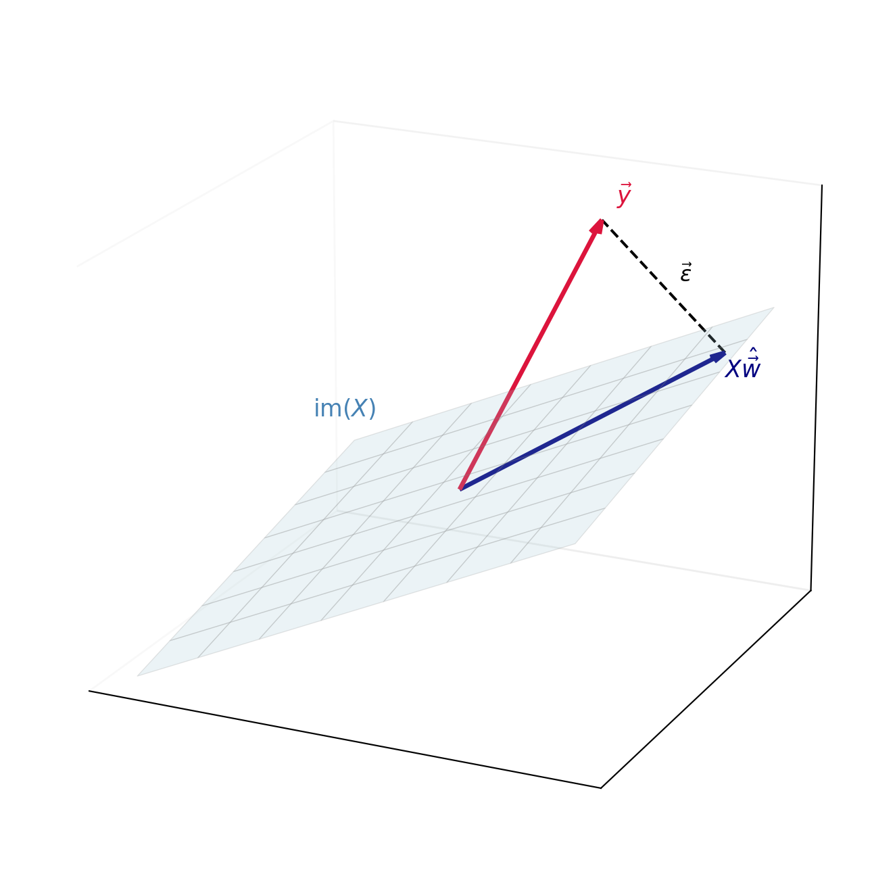

Day 5: Multiple Linear Regression
Mathcamp 2026 — Estimation Theory
Introduction
So far we have seen:
- Simpler models are preferred over complex models to avoid overfitting.
- If the errors are normally distributed, the maximum likelihood estimator minimizes the sum of squared errors.
- Closed-form formulas exist for the least squares estimators in simple linear regression.
Today we will extend these ideas to multiple linear regression, where we have more than one predictor variable. This establishes a deep connection between linear regression and linear algebra. We will see that:
- The least squares solution is a projection onto a subspace.
- The solution can be written in terms of matrix operations.
- The formulas from Day 4 are a special case of a general matrix formula.
This connection is another reason why linear regression is so widely used—we can leverage powerful tools from linear algebra.
From Equations to Matrices
Consider the simple linear regression model:
y_i = c + m x_i + \epsilon_i
for i = 1, 2, \dots, n. Writing out all n equations:
\begin{aligned} c + m x_1 + \epsilon_1 &= y_1 \\ c + m x_2 + \epsilon_2 &= y_2 \\ &\vdots \\ c + m x_n + \epsilon_n &= y_n \end{aligned}
This system can be written in matrix form as:
\begin{bmatrix} 1 & x_1 \\ 1 & x_2 \\ \vdots & \vdots \\ 1 & x_n \end{bmatrix} \begin{bmatrix} c \\ m \end{bmatrix} + \begin{bmatrix} \epsilon_1 \\ \epsilon_2 \\ \vdots \\ \epsilon_n \end{bmatrix} = \begin{bmatrix} y_1 \\ y_2 \\ \vdots \\ y_n \end{bmatrix}
We write this compactly as:
X \vec{w} + \vec{\epsilon} = \vec{y} \tag{1}
where
X = \begin{bmatrix} 1 & x_1\\ 1 & x_2 \\ \vdots & \vdots \\ 1 & x_n \end{bmatrix}, \qquad \vec{w} = \begin{bmatrix} c \\ m \end{bmatrix}, \qquad \vec{y} = \begin{bmatrix} y_1 \\ y_2 \\ \vdots \\ y_n \end{bmatrix}
The matrix X is called the design matrix. Each row corresponds to one observation, and each column corresponds to one parameter (the intercept and the slope).
Linear Algebra Essentials
Before deriving the least squares solution, we need a few facts from linear algebra.
The Image of a Matrix
For an n \times k matrix X, the image (or column space) is:
\text{im}(X) = \{ X \vec{w} \mid \vec{w} \in \mathbb{R}^{k}\}
This is the set of all linear combinations of the columns of X—a subspace of \mathbb{R}^n.
For simple linear regression with design matrix X = \begin{bmatrix} 1 & x_1 \\ 1 & x_2 \\ \vdots & \vdots \\ 1 & x_n \end{bmatrix}, we have:
\text{im}(X) = \left\{ \begin{bmatrix} c + mx_1 \\ c + mx_2 \\ \vdots \\ c + mx_n \end{bmatrix} \,\middle|\, c, m \in \mathbb{R} \right\}
Think of it this way: each choice of parameters (c, m) gives a prediction for every data point. The image \text{im}(X) is the set of all possible predictions our model can make—a 2-dimensional plane living inside \mathbb{R}^n.
Orthogonality and Transposes
The key to deriving the least squares solution is the relationship between orthogonality and matrix transposes.
Lemma 1 (Transpose and Dot Products) For any matrix X and vectors \vec{u}, \vec{v} of compatible dimensions:
(X\vec{u}) \cdot \vec{v} = \vec{u} \cdot (X^T \vec{v})
In other words, X^T “moves across” the dot product.
NoteProof
The key is that both sides compute the same sum, just grouped differently.
Consider a concrete example. Let X = \begin{bmatrix} a & b \\ c & d \end{bmatrix}, \vec{u} = \begin{bmatrix} u_1 \\ u_2 \end{bmatrix}, \vec{v} = \begin{bmatrix} v_1 \\ v_2 \end{bmatrix}.
Left side: X\vec{u} = \begin{bmatrix} au_1 + bu_2 \\ cu_1 + du_2 \end{bmatrix}, \quad (X\vec{u}) \cdot \vec{v} = (au_1 + bu_2)v_1 + (cu_1 + du_2)v_2
Right side: X^T\vec{v} = \begin{bmatrix} av_1 + cv_2 \\ bv_1 + dv_2 \end{bmatrix}, \quad \vec{u} \cdot (X^T\vec{v}) = u_1(av_1 + cv_2) + u_2(bv_1 + dv_2)
Expanding both gives au_1v_1 + bu_2v_1 + cu_1v_2 + du_2v_2. They’re equal!
The same pattern works for any size matrix: both sides sum up the quantity \sum_{i, j} u_j X_{ij} v_i.
Lemma 2 (Orthogonality to the Image) A vector \vec{\epsilon} is orthogonal to every vector in \text{im}(X) if and only if X^T \vec{\epsilon} = \vec{0}.
NoteProof
This lemma says that checking orthogonality to an entire subspace reduces to checking orthogonality to just the columns of X.
Why X^T\vec{\epsilon} = \vec{0} implies \vec{\epsilon} \perp \text{im}(X):
Suppose X^T\vec{\epsilon} = \vec{0}. Take any vector in \text{im}(X)—it has the form X\vec{w} for some \vec{w}. We need to show \vec{\epsilon} \cdot (X\vec{w}) = 0.
By Lemma 1: \vec{\epsilon} \cdot (X\vec{w}) = (X^T\vec{\epsilon}) \cdot \vec{w} = \vec{0} \cdot \vec{w} = 0 \quad \checkmark
Why \vec{\epsilon} \perp \text{im}(X) implies X^T\vec{\epsilon} = \vec{0}:
Suppose \vec{\epsilon} is orthogonal to everything in \text{im}(X). In particular, it’s orthogonal to each column of X (since the j-th column is X\vec{e}_j for a standard basis vector \vec{e}_j).
What is X^T\vec{\epsilon}? Its j-th entry is the dot product of the j-th column of X with \vec{\epsilon}. Since \vec{\epsilon} is orthogonal to each column, every entry is zero.
The Geometry of Least Squares
Now we can understand least squares geometrically. Our goal is to minimize \|\vec{\epsilon}\|^2 = \|\vec{y} - X\vec{w}\|^2.
The vector \vec{y} lives in \mathbb{R}^n. The set of all possible predictions X\vec{w} forms the subspace \text{im}(X). We want to find the point in \text{im}(X) closest to \vec{y}.
From geometry, we know: the closest point is the orthogonal projection.
Theorem 1 (The Normal Equations) The vector \hat{\vec{w}} minimizes \|\vec{y} - X\vec{w}\|^2 if and only if it satisfies:
X^T X \hat{\vec{w}} = X^T \vec{y} \tag{2}
When X^T X is invertible, the unique solution is:
\hat{\vec{w}} = (X^T X)^{-1} X^T \vec{y} \tag{3}
NoteProof
The proof has two parts: (1) why orthogonal projection minimizes distance, and (2) how to find it.
Part 1: Why orthogonal projection wins.
Imagine standing at point \vec{y} above a plane (the image). What’s the shortest path to the plane?
If you walk at an angle, you travel further than necessary. The shortest path is straight down—perpendicular to the plane. This is just the Pythagorean theorem: if \vec{r} is perpendicular to the plane and \vec{d} lies in the plane, then \|\vec{r} + \vec{d}\|^2 = \|\vec{r}\|^2 + \|\vec{d}\|^2 > \|\vec{r}\|^2.
So the closest point X\hat{\vec{w}} is characterized by: the residual \vec{\epsilon} = \vec{y} - X\hat{\vec{w}} is perpendicular to \text{im}(X).
Part 2: Finding the projection.
By Lemma 2, \vec{\epsilon} \perp \text{im}(X) is equivalent to X^T\vec{\epsilon} = \vec{0}.
Substituting \vec{\epsilon} = \vec{y} - X\hat{\vec{w}}: X^T(\vec{y} - X\hat{\vec{w}}) = \vec{0}
Expanding: X^T\vec{y} - X^TX\hat{\vec{w}} = \vec{0}
Rearranging gives the normal equations: X^TX\hat{\vec{w}} = X^T\vec{y}
When X^TX is invertible, multiply both sides by (X^TX)^{-1}: \hat{\vec{w}} = (X^TX)^{-1}X^T\vec{y}
Back to the Single Variable Case
We can now use the normal equations to solve Equation 1.
Computing X^T X:
X^T X = \begin{bmatrix} 1 & 1 & \cdots & 1 \\ x_1 & x_2 & \cdots & x_n \end{bmatrix} \begin{bmatrix} 1 & x_1 \\ 1 & x_2 \\ \vdots & \vdots \\ 1 & x_n \end{bmatrix} = \begin{bmatrix} n & \sum x_i \\ \sum x_i & \sum x_i^2 \end{bmatrix} = n\begin{bmatrix} 1 & \bar{x} \\ \bar{x} & \overline{x^2} \end{bmatrix}
Computing X^T \vec{y}:
X^T \vec{y} = \begin{bmatrix} 1 & 1 & \cdots & 1 \\ x_1 & x_2 & \cdots & x_n \end{bmatrix} \begin{bmatrix} y_1 \\ y_2 \\ \vdots \\ y_n \end{bmatrix} = \begin{bmatrix} \sum y_i \\ \sum x_i y_i \end{bmatrix} = n\begin{bmatrix} \bar{y} \\ \overline{xy} \end{bmatrix}
The determinant of X^T X:
\det(X^T X) = n^2(\overline{x^2} - \bar{x}^2) = n^2 \operatorname{Var}(x)
Computing (X^T X)^{-1}:
(X^T X)^{-1} = \frac{1}{n^2 \operatorname{Var}(x)} \begin{bmatrix} n\overline{x^2} & -n\bar{x} \\ -n\bar{x} & n \end{bmatrix} = \frac{1}{n \operatorname{Var}(x)} \begin{bmatrix} \overline{x^2} & -\bar{x} \\ -\bar{x} & 1 \end{bmatrix}
So the solution to the least squares problem is:
\boxed{ \begin{bmatrix} c \\ m \end{bmatrix} = \frac{1}{\operatorname{Var}(x)} \begin{bmatrix} \overline{x^2} & -\bar{x} \\ -\bar{x} & 1 \end{bmatrix} \begin{bmatrix} \bar{y} \\ \overline{xy} \end{bmatrix}}
Multiple Regression
The power of the matrix formulation is that it generalizes immediately to multiple predictors. Suppose we have k predictor variables x^{(1)}, x^{(2)}, \ldots, x^{(k)} and we want to fit:
y_i = w_0 + w_1 x_i^{(1)} + w_2 x_i^{(2)} + \cdots + w_k x_i^{(k)} + \epsilon_i
The design matrix becomes:
X = \begin{bmatrix} 1 & x_1^{(1)} & x_1^{(2)} & \cdots & x_1^{(k)} \\ 1 & x_2^{(1)} & x_2^{(2)} & \cdots & x_2^{(k)} \\ \vdots & \vdots & \vdots & \ddots & \vdots \\ 1 & x_n^{(1)} & x_n^{(2)} & \cdots & x_n^{(k)} \end{bmatrix}
and the least squares solution is still:
\hat{\vec{w}} = (X^T X)^{-1} X^T \vec{y}
The geometry is the same: we project \vec{y} onto the (k+1)-dimensional subspace \text{im}(X).
Summary
We have seen that linear regression is fundamentally a problem of orthogonal projection:
- The design matrix X defines a subspace \text{im}(X) of possible predictions.
- The least squares solution projects \vec{y} onto this subspace.
- The residual \vec{\epsilon} is orthogonal to \text{im}(X), leading to the normal equations X^T X \hat{\vec{w}} = X^T \vec{y}.
- The solution \hat{\vec{w}} = (X^T X)^{-1} X^T \vec{y} generalizes to any number of predictors.
Over this week, we’ve seen estimation evolve from intuitive ideas (averaging, fitting lines) to a coherent mathematical framework connecting probability, optimization, and linear algebra. The geometric viewpoint of today’s lecture—that estimation is projection—turns out to be remarkably general: the same idea powers Fourier series, signal processing, and machine learning. Whenever you need to approximate something complicated by something simpler, you’re likely projecting onto a subspace.